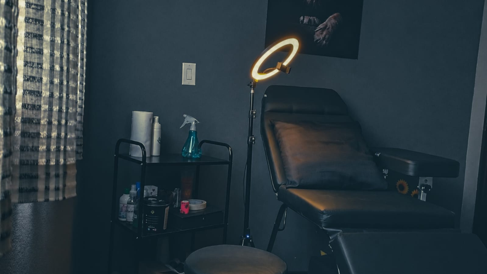
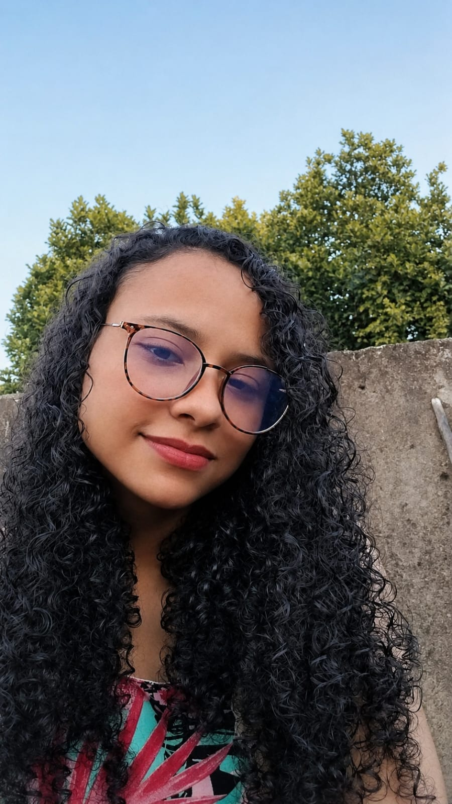

Transformando ideias em arte permanente. Tatuagens blackwork autorais, fineline e estilo anime, feitas com técnica, escuta e cuidado.
Deslize para conhecer trabalhos autorais. Toque em uma imagem para ampliar.

+4
anos de experiência
Sou Yasmin, tatuadora há mais de quatro anos. Meu trabalho é guiado pelo detalhe, do primeiro esboço à última agulhada. Atendo em ambiente reservado, com foco em escuta, conforto e segurança.
Especialista em blackwork, fine line e ilustrações anime, transformo referências em peças únicas, autorais e feitas para acompanhar você por toda a vida.
Um caminho simples, transparente e sem pressa.
Compartilhe referências, estilo e local desejado pelo WhatsApp.
Avaliamos a complexidade e enviamos valores e prazos.
Escolhemos a melhor data para sua tatuagem com tranquilidade.
Você sai do estúdio com uma obra única, feita para durar.
“Experiência incrível. A Yasmin entendeu exatamente o que eu queria e transformou em algo melhor do que imaginei.”
“Estúdio impecável, traço perfeito. Já é minha terceira tatuagem com ela e sempre supera as expectativas.”
“Profissionalismo do começo ao fim. Cuidado, higiene e arte de verdade. Recomendo de olhos fechados.”
O resultado final depende tanto da arte quanto da cicatrização. Siga estas orientações para garantir traços firmes, cores vivas e uma pele saudável.
Mantenha o filme protetor pelo tempo indicado. Ao retirar, lave delicadamente com água morna e sabonete neutro, sem esfregar.
Nos primeiros dias, evite pomadas e hidratantes. A pele precisa respirar e iniciar a cicatrização sozinha — apenas higienize 2 a 3 vezes ao dia.
Aplique uma camada fina de hidratante recomendado, 2 a 3 vezes ao dia, por cerca de 15 dias. Nunca arranque casquinhas — deixe cair sozinhas.
Sem exposição solar direta, praia, piscina ou sauna. Após a cicatrização, use sempre protetor solar FPS 50+ para manter o traço vivo por muito mais tempo.
Conversamos pelo WhatsApp para entender sua ideia, alinhar valores e marcar sua sessão.
Iniciar conversa no WhatsApp